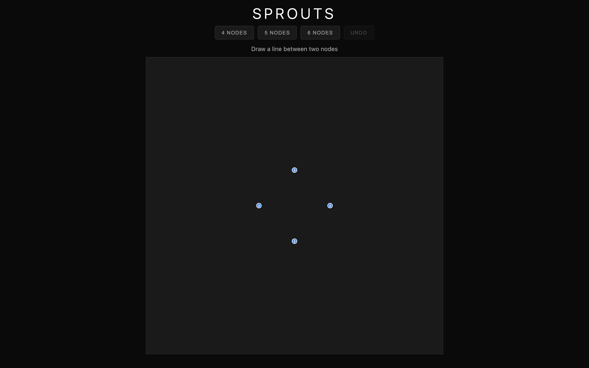
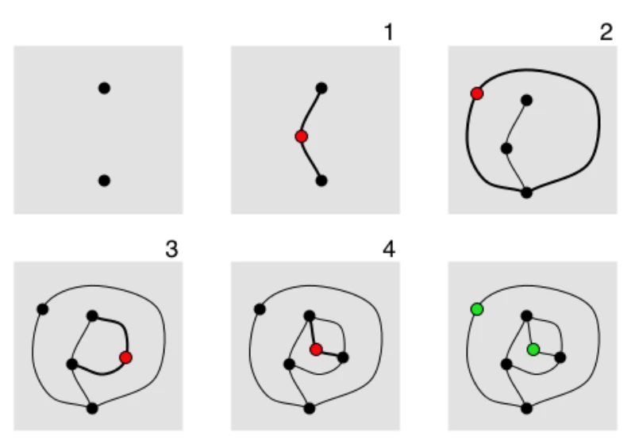
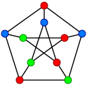
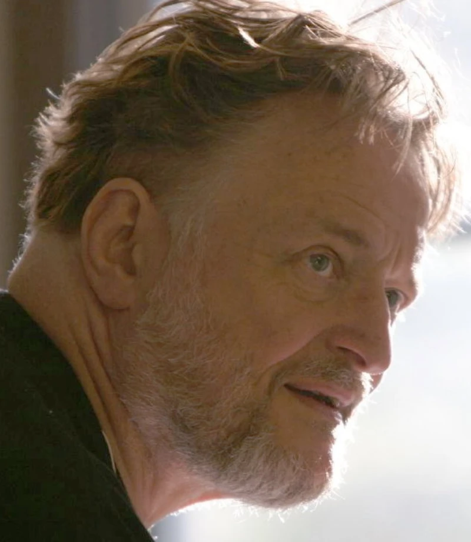

Sprouts is a pen-and-paper game that John Conway and Michael Paterson invented in 1967. You start with \(n\) dots (called spots) on a page. Players take turns drawing a curve between two spots (or from a spot back to itself), then placing a new spot somewhere along the curve they just drew. Each spot can have at most three lines touching it — that is, every vertex has degree at most 3 — and lines are not allowed to cross. The last player who can make a legal move wins (this is the normal play convention).
The rules fit on an index card but the game is surprisingly deep. For small numbers of starting spots, determining the winner is a solved problem in combinatorial game theory, but the proofs are non-trivial and the general case is still open. I wanted to play it against a computer, and building that computer opponent turned out to be harder than the game itself.
Graph theory and the Euler characteristic
A Sprouts position is a planar graph drawn on the sphere (or equivalently the plane). At any moment the game state is a graph \(G = (V, E)\) embedded in a surface of genus 0. By the Euler formula for connected planar graphs:
\[V - E + F = 2\]where \(V\) is the number of vertices, \(E\) the number of edges, and \(F\) the number of faces (regions, including the unbounded outer face). Each move adds one edge and one vertex: the new curve becomes an edge (or sometimes two edges, split by the new spot), and the new spot is a vertex of degree 2 or 3. The non-crossing constraint is what forces the game onto a surface — it is precisely the requirement that the graph remain planar.
The key constraint is the degree bound. Every vertex has degree at most 3, so the sum of all vertex degrees satisfies \(\sum_{v \in V} \deg(v) \leq 3|V|\). By the handshaking lemma, \(\sum_{v \in V} \deg(v) = 2|E|\), giving us:
\[|E| \leq \frac{3}{2}|V|\]Now consider a game starting with \(n\) spots. Each original spot begins with degree 0 and can accept up to 3 edges. Each move creates exactly one new spot (of degree 2, since it sits in the interior of the new curve) and adds one new edge. After \(m\) moves, we have \(|V| = n + m\) vertices and \(|E| = 2m\) edges (each move produces two edge-segments separated by the new spot). The total degree budget starts at \(3n\) (from the original spots) and each move consumes 2 degrees from existing endpoints while adding a new vertex with 1 remaining degree. A careful accounting yields the following theorem.
Theorem (Conway & Paterson, 1967). A game of Sprouts beginning with \(n\) spots lasts at least \(2n\) moves and at most \(3n - 1\) moves.
The lower bound comes from the observation that each move reduces the total number of available lives (unused degree slots) by at most 1, and you start with \(3n\) lives but need at least \(n + 1\) alive vertices at the end for the graph to have been constructible. The upper bound \(3n - 1\) follows from the edge inequality above: after \(m\) moves, \(2m \leq \frac{3}{2}(n + m)\), which gives \(m \leq 3n\), and a slightly tighter argument using the Euler formula and the fact that every face must be bounded by at least 3 edges pushes this to \(m \leq 3n - 1\). In practice, games tend to last close to \(3n - 1\) moves with good play.

{kind=link}
Sprague-Grundy theory
Sprouts is an impartial game under normal play: both players have the same moves available from any position, and the last player to move wins. This places it squarely in the domain of the Sprague-Grundy theorem, which says that every impartial game position is equivalent to a nimber \(*k\) for some non-negative integer \(k\). A position is a loss for the player to move if and only if its Grundy value is \(*0\).
In principle, you could compute the Grundy value \(\mathcal{G}(P)\) for every Sprouts position \(P\) by the recursive formula:
\[\mathcal{G}(P) = \operatorname{mex}\bigl(\{\mathcal{G}(P') : P' \text{ is a position reachable from } P\}\bigr)\]where \(\operatorname{mex}\) (minimum excludant) is the smallest non-negative integer not in the set. In practice, this is intractable for all but the smallest \(n\) because the number of distinct positions grows enormously. Exhaustive Sprague-Grundy computation has determined the winner for \(n \leq 44\) (with the first player winning when \(n\) is 3, 4, or 5 mod 6, and losing otherwise), but a general proof of this pattern remains open. The computations rely on reducing the continuous game to equivalence classes of abstract planar graphs, which is itself a deep problem in topology.

{kind=link}
The problem with continuous moves
In most board games, a move is something discrete: pick up a piece, put it down on a square. The game engine can enumerate all legal moves and check them against a list. Sprouts doesn't work this way. A move is a freeform curve drawn in the plane, and its legality depends on whether that curve intersects any existing geometry. There's no grid. The move space is continuous.
My first approach to checking move legality was to sample the curve at many points and test each sample for collisions with existing lines. This was slow and unreliable. Curves that passed close to existing lines but didn't cross them would sometimes register as collisions depending on sampling density, and actual crossings could slip through gaps between samples. I needed a different approach.
Morphological skeletons
The solution came from image processing. Think of the game board as a binary image: existing lines and dots are obstacles, and everything else is free space. If you apply morphological thinning to the free space, you get a medial axis, a one-pixel-wide skeleton that runs through the center of every open corridor on the board. This skeleton is itself a graph \(S = (V_S, E_S)\) embedded in the plane, and pathfinding on \(S\) gives candidate curves that are guaranteed to avoid existing geometry. It is a map of where valid moves can exist.
The thinning uses the Zhang-Suen algorithm, which iterates over the image removing boundary pixels that satisfy certain connectivity conditions. After thinning, what remains is the skeleton: a graph of corridors through free space.
Before thinning, there's an adaptive dilation step. Wide open areas get heavy dilation, which forces the skeleton toward the center of those areas. Narrow passages get light dilation so they don't collapse entirely. The dilation amount is determined by a local distance transform that estimates corridor width at each point. This adaptive approach matters a lot in the endgame, when the board is crowded and remaining free space is a collection of thin, winding channels. Without adaptive dilation, the skeleton would either miss narrow passages or produce a skeleton so far from the center of wide areas that it suggests moves too close to existing lines.
When the skeleton approach fails (and in very tight endgame positions it does), a fallback A* pathfinder operates in the raw free space with relaxed constraints. The fallback is slower but can find paths that the skeleton misses.

_(2).jpg){kind=link}
The AI
Move generation works by pathfinding along the skeleton between every pair of nodes that could legally be connected (accounting for the three-connection limit). For each pair, the AI attempts to find a skeleton path first, then tries the relaxed pathfinder if that fails. Each successful path becomes a candidate move. The AI also considers self-connections (curves from a node back to itself) for nodes with two or fewer existing connections.
The search uses minimax with alpha-beta pruning at two plies of depth. While Sprague-Grundy theory tells us a complete analysis is possible in principle, the branching factor is too large for full computation at game scale, so the AI relies on heuristic evaluation. The tricky part is that the search tree operates on abstract graph representations of the game state, but the actual moves need to be concrete pixel-level curves. The AI generates concrete curves, abstracts them into graph operations for the minimax evaluation, then returns the concrete curve of the best move for rendering.
There's an opening book for the first few moves. Early-game strong plays in Sprouts are well-studied and don't need to be recomputed every time.
When the AI draws a curve, it also needs to decide where on that curve to place the new dot. The heuristic samples the middle 80% of the curve (avoiding the endpoints, which are close to existing nodes) and picks the point with the greatest minimum distance to any existing obstacle. The idea is to preserve as much open space as possible for future moves, preventing the AI from accidentally walling itself off.
Putting it together
The game logic and AI are written in Rust, compiled to WebAssembly. The WASM module runs in a Web Worker so that the AI's computation (which can take a few seconds on larger boards) doesn't block the UI thread. The frontend uses HTML5 Canvas for rendering and handles both mouse and touch input, since Sprouts is the kind of game you might play on a phone.
Difficulty is controlled by the number of starting spots: 4, 5, or 6. More starting spots means a longer game with a larger and more complex move space. With \(n = 6\), the game can last up to \(3(6) - 1 = 17\) moves, and the AI takes noticeably longer to think because the number of candidate moves grows quickly and the skeleton computation is more expensive on a crowded board. For reference, at \(n = 4\) the game lasts between 8 and 11 moves, while at \(n = 5\) it's between 10 and 14.
The visual design is dark and minimal: near-black background, white lines, green accent for victories and red for losses. The board itself is the interesting visual, and a busy UI would compete with it.